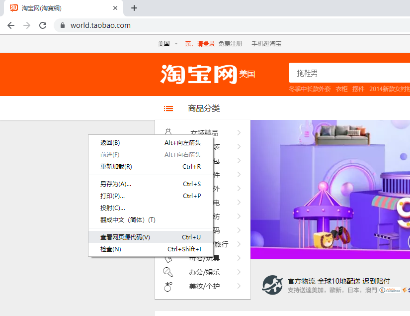

最开始的话
领导好！打算写几篇小短文，给领导介绍一下程序员的世界，没准领导从此开始就成程序媛了呢。
题目暂定成叔叔的魔法入门手册，因为写程序可能是最接近魔法的事情了。不是说写程序有多神奇，或者程序有像魔法那样厉害，而是写程序是在操纵一个想象中世界的东西。比如物理，研究的是物理世界的规律，而机械、土木、水利，研究的是怎样改造物理世界。前一种我们叫科学，即所谓的理科，后一种我们叫工程，即所谓的工科。而程序员们是在信息的世界里，这个世界里也有科学也有工程。现在分的没那么清楚是因为我们进入信息时代还没多少年，如果再照这个速度发展下去，以后可能要分出很多很多的专业。比如现在有汽车专业，将来可能要有写网站专业。有一种说法，以后写程序要像识字、学数学一样，成为义务教育的一部分。
当然这次写的东西，不打算太多写信息科学的部分，工程也只打算写一些最接近我们日常生活的部分。目的也很简单，让领导明白程序员的工作每天是在干什么，好让领导决定要不要学计算机。
帮我做个淘宝网多少钱？
段子里经常有那种人傻钱多的老板，问程序员做一个淘宝/滴滴/支付宝要多少钱。之所以这是个段子，是因为一个淘宝网包含的东西太多太多了，这个问题更像是，“给我建一个高铁那样的跑在铁轨上的车多少钱？”。高铁看起来是跑在铁轨上的车，你想建一个的话，需要问你想建多大的，还有你都要建哪部分。煤矿上的小车、烧煤的绿皮车、和谐号动车，都是跑在铁轨上的车，显然他们是不一样的的。如果只想要和谐号的壳装在煤矿小车上，也不贵。
那淘宝网都有哪些部分呢？嘿嘿，这个问题等看完了所有的文章，领导你就能知道了。
9¾站台
哈利波特里，通往魔法世界的路在伦敦的九又四分之三站台。通往程序世界的入口又在哪呢？其实很简单，看图：
